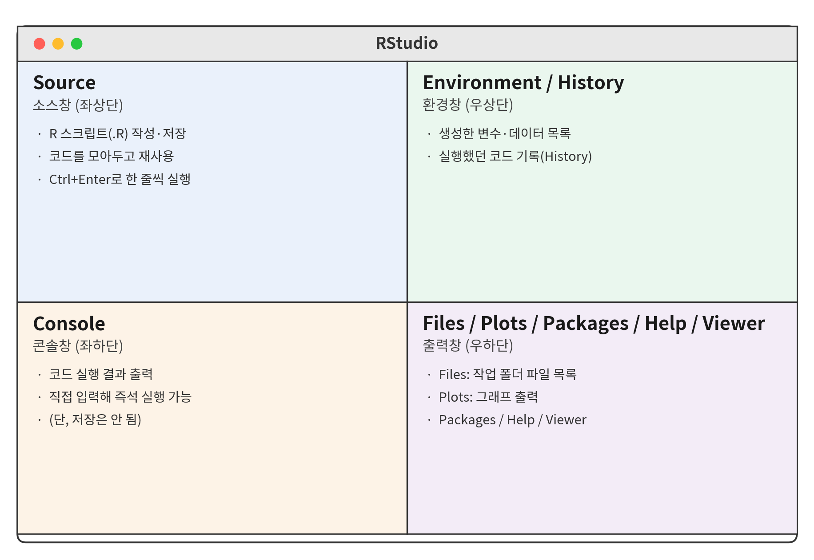
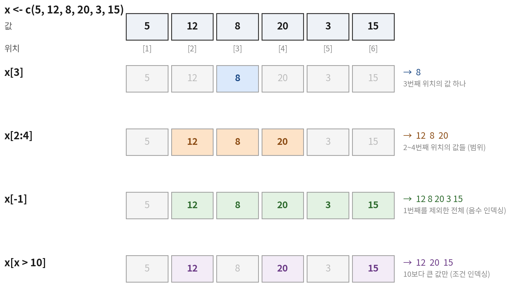

[1] 5
[1] 4
[1] 20자료형과 자료구조 — 벡터, 리스트, 데이터프레임
| 시간 | 세션 | 내용 |
|---|---|---|
| 10:00–11:00 | R 기초 | 자료형, 벡터 · 리스트 · 데이터프레임 |
| 11:00–12:00 | 데이터프레임 다루기 I | 주요 함수, 인덱싱 · 슬라이싱 |
| 13:00–15:00 | 데이터프레임 다루기 II | dplyr — select · filter · mutate · arrange |
| 15:00–17:00 | 데이터프레임 다루기 III | group_by · summarize, _join 결합 |
오전에는 R 자체의 문법(base R)을, 오후에는 dplyr 패키지로 같은 작업을 더 짧고 읽기 쉽게 하는 방법을 다룸. 실습 데이터는 국민체력100 체력측정 자료와 비슷한 구조로 만든 가상 데이터임.
R을 쓰는 작업 환경 익히기
R
RStudio
설치 순서: R 설치 → RStudio 설치

| 창 | 하는 일 |
|---|---|
| Source (좌상) | 스크립트(.R) 작성 · 저장 |
| Console (좌하) | 코드 실행, 결과 출력 |
| Environment (우상) | 만든 객체(변수 · 데이터) 목록 |
| Files / Plots / Help (우하) | 파일, 그래프, 도움말 |
Ctrl + Shift + N)Ctrl + Enter (Mac: Cmd + Enter)Ctrl + S → day1.R프로젝트(.Rproj)를 쓰면
프로젝트 폴더가 자동으로 작업 디렉토리(working directory)가 되어서, 파일을 불러올 때 긴 경로를 쓰지 않아도 됨.
<- : 할당(assign) — 오른쪽 값을 왼쪽 이름에 저장. 저장한 것을 객체(object)라고 함| 가능 | 불가능 | 이유 |
|---|---|---|
grip, grip_2025 |
2025_grip |
숫자로 시작할 수 없음 |
grip.left, gripLeft |
grip left |
공백 불가 |
Grip 과 grip |
대소문자를 구분 → 서로 다른 객체 |
함수는 함수이름(인자1, 인자2, ...) 형태로 씀
?round 또는 help(round) → Help 창에 설명 표시비유
install.packages()는 책을 사서 책장에 꽂는 것, library()는 오늘 읽을 책을 책상 위로 꺼내는 것.
문자형 · 숫자형 · 논리형
| 자료형 | 예시 | 확인 결과 class() |
설명 |
|---|---|---|---|
| 숫자형 | 44.1, 175, -2.5 |
"numeric" |
정수 · 소수 모두 포함 |
| 문자형 | "1등급", "44.1" |
"character" |
따옴표로 감싼 텍스트 |
| 논리형 | TRUE, FALSE |
"logical" |
참 / 거짓 |
double)로 저장됨integer)는 숫자 뒤에 L을 붙이거나 1:10처럼 만들 때 생김class()가 numeric 또는 integer면 숫자형으로 보면 됨TRUE = 1, FALSE = 0 으로 계산됨
certified <- c(TRUE, TRUE, FALSE, TRUE, FALSE)
sum(certified) # TRUE의 개수 → 인증자 수
mean(certified) # TRUE의 비율 → 인증률[1] 3
[1] 0.6조건식 + sum() = 조건을 만족하는 개수, 조건식 + mean() = 조건을 만족하는 비율. 오후 summarize()에서 계속 쓰는 방식임.
| 값 | 의미 | 예 |
|---|---|---|
NA |
결측값 — 값이 있어야 하는데 없음 | 측정 거부, 미측정 |
NULL |
아무것도 없음 (빈 객체) | 열 삭제할 때 사용 |
NaN |
계산 불가능 | 0 / 0 |
Inf |
무한대 | 1 / 0 |
my_height, my_weight에 저장하고 BMI 구하기"175.5"를 숫자로 바꿔서 100으로 나누기c(TRUE, FALSE, TRUE, TRUE)에서 TRUE의 개수와 비율 구하기벡터 · 팩터 · 리스트 · 데이터프레임
| 한 가지 자료형만 | 여러 자료형 섞을 수 있음 | |
|---|---|---|
| 1차원 | 벡터 c() |
리스트 list() |
| 2차원 | 행렬 matrix() |
데이터프레임 data.frame() |
[1] 57.64706 50.36900 49.44649 41.26456
[1] 48.51 30.03 44.22 27.28
[1] TRUE FALSE TRUE FALSE재활용 규칙
길이가 다른 벡터끼리 계산하면 짧은 쪽이 반복됨. grip * 1.1에서 1.1이 네 번 반복되어 각 원소에 곱해지는 것도 이 규칙 때문임. 길이가 배수가 아니면 경고가 나옴.
[1] 44.1 27.3 40.2
[1] "44.1" "27.3" "측정불가"
[1] 44.1 27.3 1.0우선순위: 논리형 → 숫자형 → 문자형. 하나라도 문자가 섞이면 전부 문자가 됨
[ ]
%in% — 여러 값 중 하나인지exercise
주 1~2회 주 1회 미만 주 3회 이상
1 2 1
exercise_f
주 1회 미만 주 1~2회 주 3회 이상
2 1 1
[1] "주 1회 미만" "주 1~2회" "주 3회 이상"levels로 범주의 순서를 지정 → 표 · 그래프 · 회귀분석의 기준 범주에 반영됨center <- list(
name = "가람체력인증센터",
staff = 8,
items = c("상대악력", "교차윗몸일으키기", "앉아윗몸앞으로굽히기"),
public = TRUE
)
str(center)List of 4
$ name : chr "가람체력인증센터"
$ staff : num 8
$ items : chr [1:3] "상대악력" "교차윗몸일으키기" "앉아윗몸앞으로굽히기"
$ public: logi TRUEstr()로 구조 확인[[ ]] · $ · [ ][1] "가람체력인증센터"
[1] 8
$staff
[1] 8
[1] "list"
[1] "numeric"| 문법 | 결과 |
|---|---|
center$name, center[["name"]] |
상자 안의 내용물 |
center["name"], center[1] |
내용물이 든 작은 상자(리스트) |
[1] "htest"
[1] "statistic" "parameter" "p.value"
[4] "conf.int" "estimate" "null.value"
[7] "stderr" "alternative" "method"
[10] "data.name"
[1] 0.7154383$로 꺼내 쓸 수 있음 → 둘째 날 lm() 결과에서 계수 꺼낼 때 사용member <- data.frame(
id = c("A01", "A02", "A03", "A04", "A05",
1 "A06", "A07", "A08", "A09", "A10"),
sex = c("M", "F", "M", "F", "M", "F", "M", "F", "M", "F"),
age = c(50, 59, 57, 47, 51, 48, 36, 31, 46, 45),
height = c(167.7, 155.3, 173.9, 165.3, 163.7,
163.4, 178.4, 158.4, 170.3, 161.7),
weight = c(70.5, 56.6, 71.8, 53.0, 79.0,
56.9, 84.7, 53.0, 84.5, 47.8),
grip = c(42.1, 21.7, 41.4, 25.9, 45.2,
2 29.1, 41.9, 34.0, 43.2, 21.8),
exercise = c("주 1~2회", "주 1회 미만", "주 1~2회", "주 1회 미만", "주 3회 이상",
"주 1~2회", "주 1~2회", "주 3회 이상", "주 1~2회", "주 1회 미만"),
certified = c(FALSE, TRUE, TRUE, FALSE, TRUE,
3 TRUE, FALSE, TRUE, TRUE, FALSE)
) id sex age height weight grip exercise certified
1 A01 M 50 167.7 70.5 42.1 주 1~2회 FALSE
2 A02 F 59 155.3 56.6 21.7 주 1회 미만 TRUE
3 A03 M 57 173.9 71.8 41.4 주 1~2회 TRUE
4 A04 F 47 165.3 53.0 25.9 주 1회 미만 FALSE
5 A05 M 51 163.7 79.0 45.2 주 3회 이상 TRUE
6 A06 F 48 163.4 56.9 29.1 주 1~2회 TRUE
7 A07 M 36 178.4 84.7 41.9 주 1~2회 FALSE
8 A08 F 31 158.4 53.0 34.0 주 3회 이상 TRUE
9 A09 M 46 170.3 84.5 43.2 주 1~2회 TRUE
10 A10 F 45 161.7 47.8 21.8 주 1회 미만 FALSEstr()'data.frame': 10 obs. of 8 variables:
$ id : chr "A01" "A02" "A03" "A04" ...
$ sex : chr "M" "F" "M" "F" ...
$ age : num 50 59 57 47 51 48 36 31 46 45
$ height : num 168 155 174 165 164 ...
$ weight : num 70.5 56.6 71.8 53 79 56.9 84.7 53 84.5 47.8
$ grip : num 42.1 21.7 41.4 25.9 45.2 29.1 41.9 34 43.2 21.8
$ exercise : chr "주 1~2회" "주 1회 미만" "주 1~2회" "주 1회 미만" ...
$ certified: logi FALSE TRUE TRUE FALSE TRUE TRUE ...chr 문자, num 숫자, logi 논리[1] TRUE
[1] 8
[1] 42.1 21.7 41.4 25.9 45.2 29.1 41.9 34.0 43.2
[10] 21.8
[1] "주 1~2회" "주 1회 미만" "주 1~2회"
[4] "주 1회 미만" "주 3회 이상" "주 1~2회"
[7] "주 1~2회" "주 3회 이상" "주 1~2회"
[10] "주 1회 미만"
[1] 34.63열 하나를 꺼내면 벡터가 됨 → 앞에서 배운 벡터 함수(mean, table, sum …)를 그대로 쓸 수 있음
| 구조 | 만들기 | 차원 | 자료형 | 꺼내기 |
|---|---|---|---|---|
| 벡터 | c(), :, seq(), rep() |
1 | 한 가지 | x[i] |
| 팩터 | factor(x, levels = ) |
1 | 범주 | x[i], levels(x) |
| 리스트 | list() |
1 | 섞임 | x$a, x[["a"]], x["a"] |
| 데이터프레임 | data.frame() |
2 | 열마다 다름 | df$col, df[i, j] (2교시) |
member에서 1~3등급인 사람 수와 비율 구하기 (certified 열 사용)exercise)별 인원을 table()로 구하기grip)이 40kg 이상인 값만 꺼내기member의 상대악력(grip / weight * 100)을 구하고 평균 내기exercise를 "주 1회 미만", "주 1~2회", "주 3회 이상" 순서의 팩터로 바꿔 table() 결과 비교하기my_center를 만들고 측정 항목 수만 꺼내기sum(member$certified)
mean(member$certified)
table(member$exercise)
member$grip[member$grip >= 40]
grip_rel <- member$grip / member$weight * 100
mean(grip_rel)
table(factor(member$exercise, levels = c("주 1회 미만", "주 1~2회", "주 3회 이상")))
my_center <- list(name = "가람체력인증센터", region = "서울", n_items = 6)
my_center$n_items[1] 6
[1] 0.6
주 1~2회 주 1회 미만 주 3회 이상
5 3 2
[1] 42.1 41.4 45.2 41.9 43.2
[1] 52.32918
주 1회 미만 주 1~2회 주 3회 이상
3 5 2
[1] 61교시 · R 기초